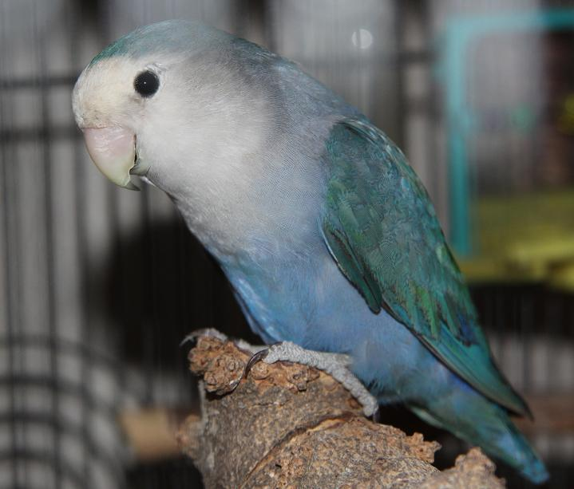

Roseicollis (Peach-faced lovebird)
 The rosy-faced lovebird (Agapornis roseicollis), also known as the rosy-collared or peach-faced lovebird, is a species of lovebird native to arid regions in southwestern Africa such as the Namib Desert. A loud and constant chirper, these birds are very social animals and often congregate in small groups in the wild. They eat throughout the day and take frequent baths. Coloration can vary widely among populations. Plumage is identical in males and females. Lovebirds are renowned for their sleep position in which they sit side-by-side and turn their faces in towards each other. Also, females are well noted to tear raw materials into long strips, "twisty-tie" them onto their backs, and fly substantial distances back to make a nest. They are common in the pet industry.
read more
The rosy-faced lovebird (Agapornis roseicollis), also known as the rosy-collared or peach-faced lovebird, is a species of lovebird native to arid regions in southwestern Africa such as the Namib Desert. A loud and constant chirper, these birds are very social animals and often congregate in small groups in the wild. They eat throughout the day and take frequent baths. Coloration can vary widely among populations. Plumage is identical in males and females. Lovebirds are renowned for their sleep position in which they sit side-by-side and turn their faces in towards each other. Also, females are well noted to tear raw materials into long strips, "twisty-tie" them onto their backs, and fly substantial distances back to make a nest. They are common in the pet industry.
read more
Rosy-faced lovebird colour genetics

Feeding
Breeding
Aviculture